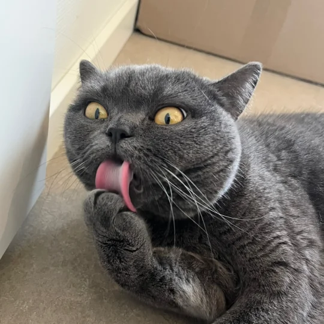

Hi, I'm Shuang, a second-year PhD candidate in Cybersecurity at LIACS, Leiden University, Netherlands. My research focuses on the security of natural-language prompts in AI-assisted code generation. You can find more about our group here: LOCS.
In my first year of PhD, I focused on Cryptography and conducted a comprehensive review of preprocessing models in Multi-Party Computation. The manuscript is available here.
I am actively involved in academic activities. I am a member of the LIACS Diversity Committee and ACCSS. I enjoy organizing events and have co-organized Alice and Eve 2024 and Ethics in Cybersecurity and AI 2025.
I am passionate about programming and proficient in C/C++, Python, and popular front-end technical stacks. Before starting my PhD, I worked as a research engineer for two years in BJCA, the national cryptography company in Beijing. I also worked as a developer for five years before that.
If you have any collaboration ideas or questions, please feel free to contact me: s.sun@liacs.leidenuniv.nl
Google Scholar · LinkedIn · ORCID · GitHub · University Profile